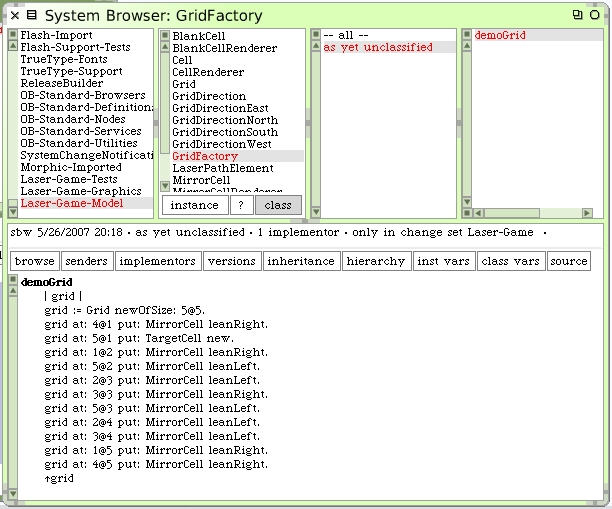
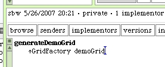
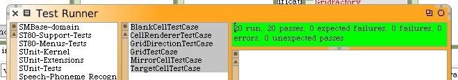

A Factory For Grids
We will create a factory class for the generation of grids. It will generate random grids for us and create a pre-determined grid we can use for tests. GridFactory is a new subclass of Object.
We just copied the contents of the #generateDemoGrid from GridTestCase for our new #demoGrid method. Now we need to go back to the GridTestCase and use the new factory. Rerun our tests to ensure everything still works.
 Later, we can add random grid generation code to our new factory.